Houlgate 2006

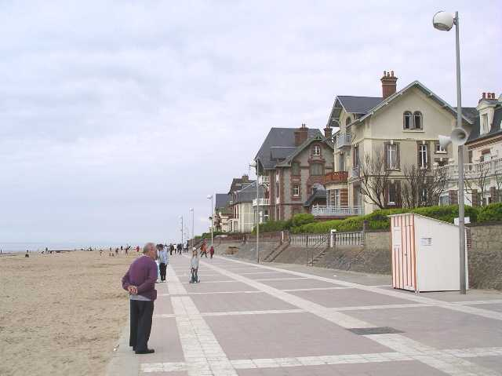
Première fois que j'allais à Houlgate Plein Vent, mais c'est leur 5ème édition. Organisé par Frédéric Pouillaude, il réunit un peu toutes les disciplines du vent.

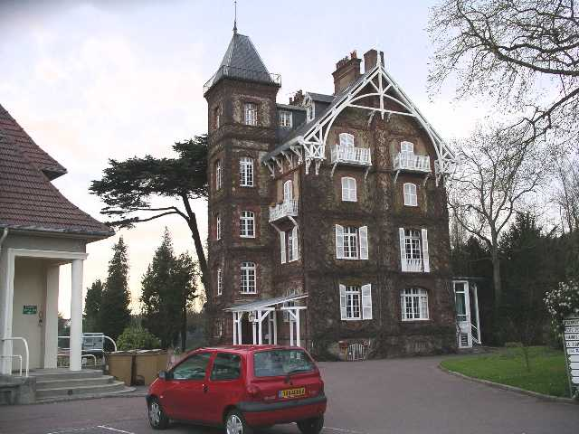
On est bien accueilli, au Creps qui nous nourrit matin et soir et nous couche ! L'ensemble est supérieurement équipé dans un grand domaine avec maison de maître, 3 ou 4 gymnases, plein d'installations annexes et encore, hors de l'enceinte, des tennis couverts...

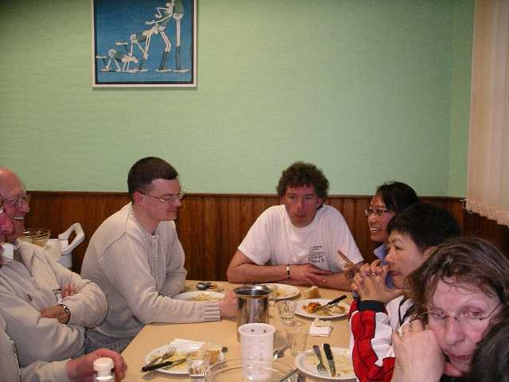
Le soir donc, repas au Creps. Chacun apporte sa plus ou moins modeste contribution pour améliorer l'ordinaire, l'équipe canadienne en particulier. J'ai fourni un peu de Bordeaux (Côtes de Blaye) pour qu'ils sachent ce qui est bon !

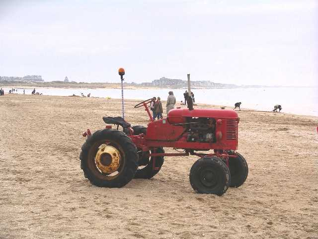
Au matin, le tracteur est en place pour transporter les équipements. Il intéresse beaucoup les enfants : quand on a eu monté de merveilleux CVs, on les a entendu crier : "oh, viens voir... un tracteur"...

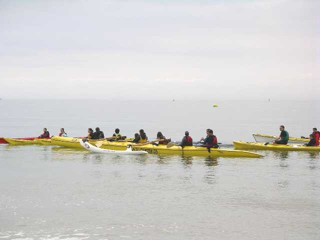
Sur la mer, nautisme : le club de kayak a un kayak à... SIX places ! Ca doit avancer, mais pour les virages...

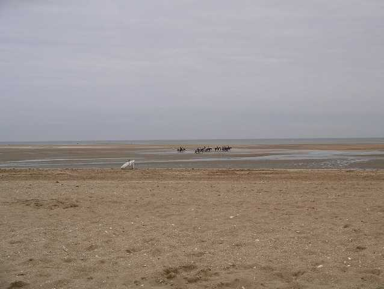
A marée basse, la plage est quasiment horizontale, très vaste et dure, on peut y marcher ou rouler sans problèmes... à condition de remonter à temps !

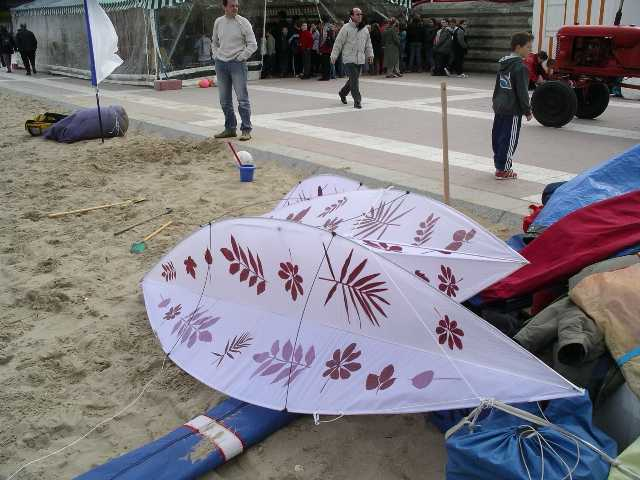
Le Holland Kite Team est là, constitué de John et Hermann. Ils déballent de beaux CVs dont ces Sentinelles décorées avec délicatesse...

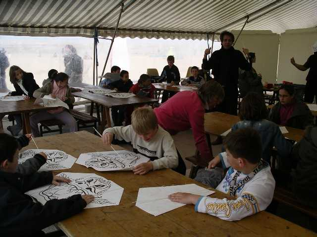
Dans le barnum, un atelier de construction où se succéderont les classes des écoles pour construire des Eddies qui marchent bien une fois réglés, ou des sleds... qu'on ne peut pas régler.

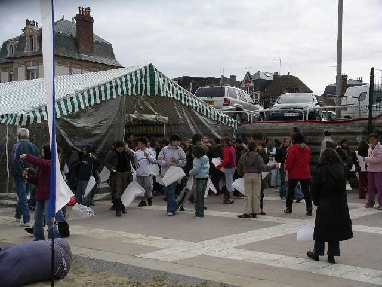
A la sortie de l'atelier, plus qu'à faire voler !

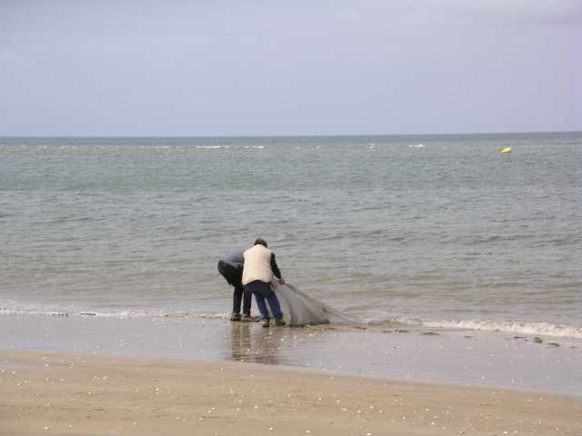
Pas beaucoup de vent cette semaine, même les flows-forms se laissent aller, et à marée haute, bien sûr...

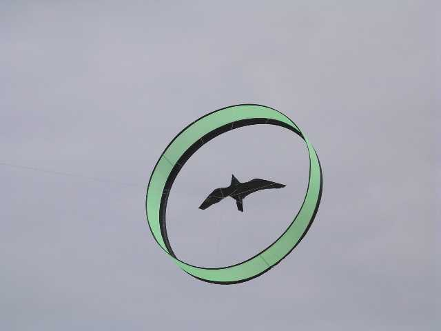
John a mis en l'air son composite de circoflex et d'oiseau...

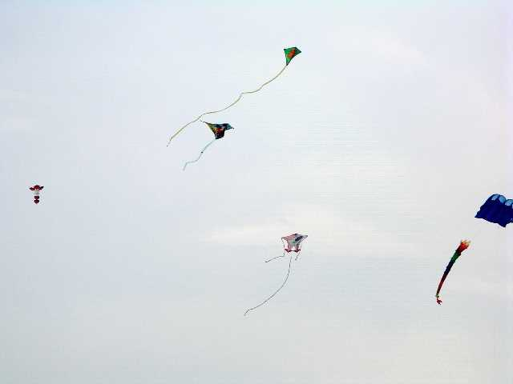
Il finit quand même par y avoir bon nombre de CVs en l'air !

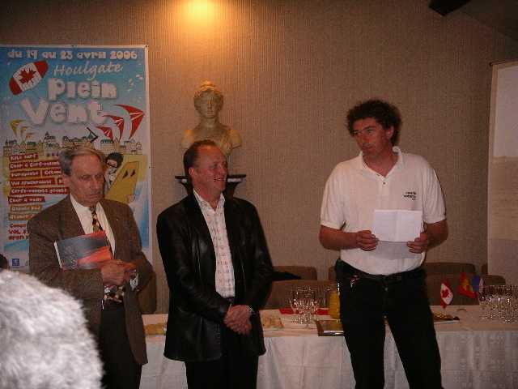
Petite réception à la Mairie pour remercier tout le monde. En particulier il y a un jumelage cervolistique avec Saint-Placide (Canada) dont le maire Denis (au centre) s'est déplacé à Houlgate. Eux font leur festival sur le lac gelé !

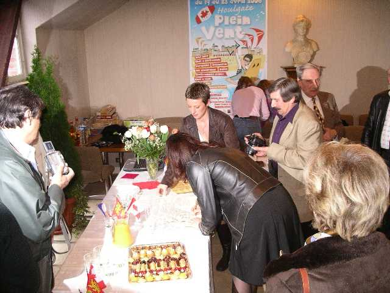
Les dirigeants des 2 associations sont... des dirigeantes. Elles signent toutes deux la "chartre" rédigée par un canadien, ça se sent...

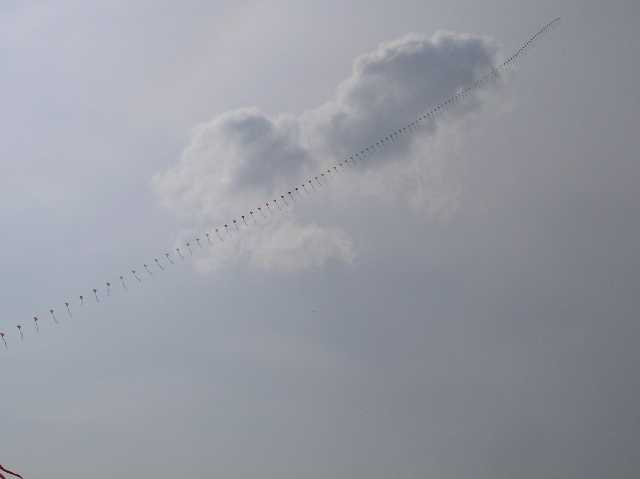
Les hollandais sortent un de leurs trains, ils en ont plusieurs autres, avec des oiseaux, un dragon-lion, etc... Leur monospace est bourré à craquer !

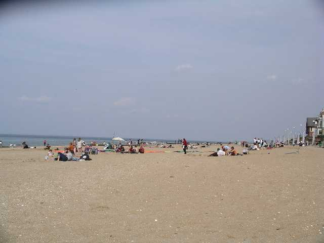
En semaine, pas de zone réservée, on s'installe où on veut sur la plage au milieu des baigneurs... Ca se passe assez bien, c'est vrai que la plage est grande et les "baigneurs" pas trop nombreux. Mais le week-end, la zone sera clôturée.

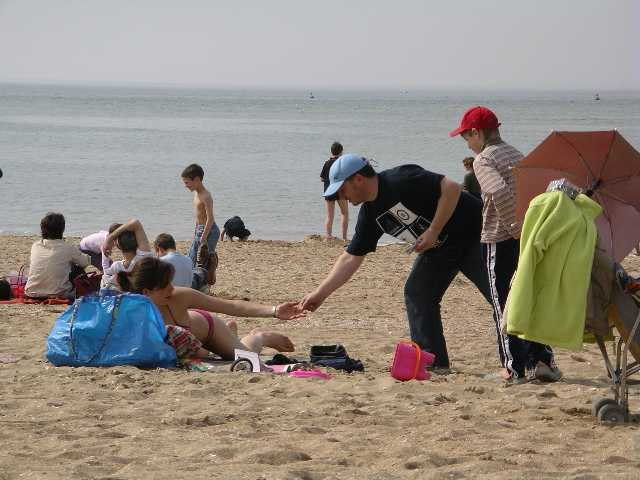
Il y a même des baigneuses en bikini qui se font bronzer courageusement. Il y en a une qui se baignera tranquillement pendant 10 mn !

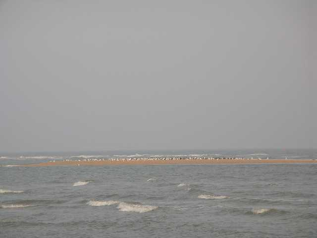
Cette île est ce qui reste de la plage basse quand la marée monte. Il faut penser à remonter avant car la mer fait vite, sur le plat. A marée haute, tout est complètement recouvert.

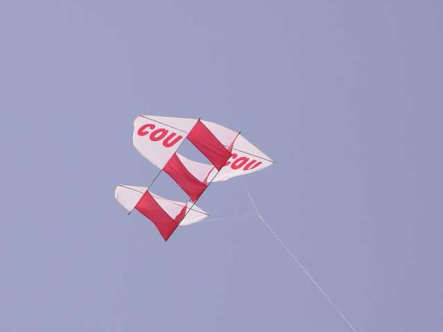
Une copie de Coucou, cerf-volant d'époque, de Pantenier.

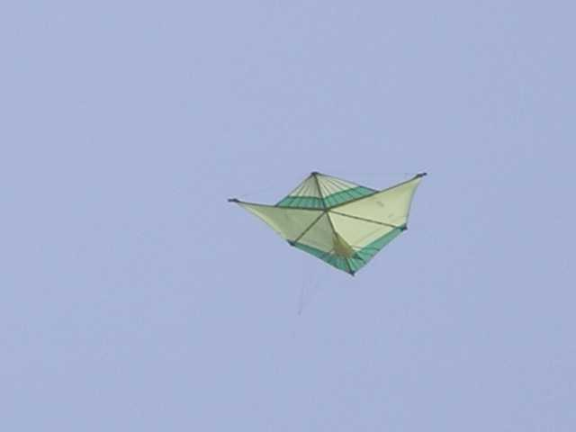
Et un Jessica 12 ! Le créateur, Sylvien est venu le dimanche, mais celui-là est celui de François, ou plutôt celui de Sylvien qu'il a donné à François. Vous suivez toujours ? C'était le premier, ce pourquoi il a plein de coutures maintenant inutiles permettant les essais de positionnements des parties.

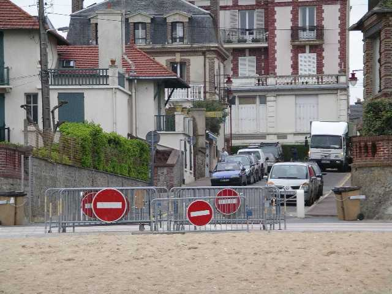
Le soir, pour partir de la plage, je crois bien que cette rue est interdite, mais c'est juste une impression...

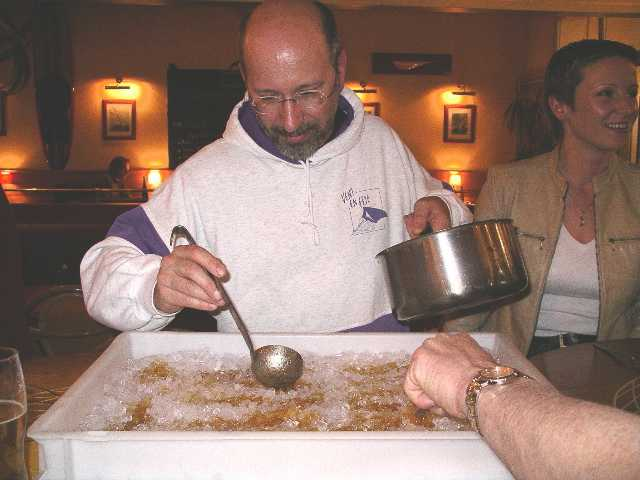
Le soir au bistrot Le Globe, Yves nous initie à la "tire" canadienne : sirop d'érable chaud versé sur lit de neige. Malheureusement, pas de neige à Houlgate en avril, on la remplace par de la glace pilée...

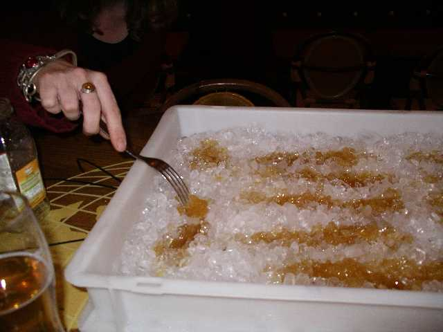
Ca fait une espèce de sucette qui a principalement goût... de sirop d'érable, et c'est très sucré, évidemment...

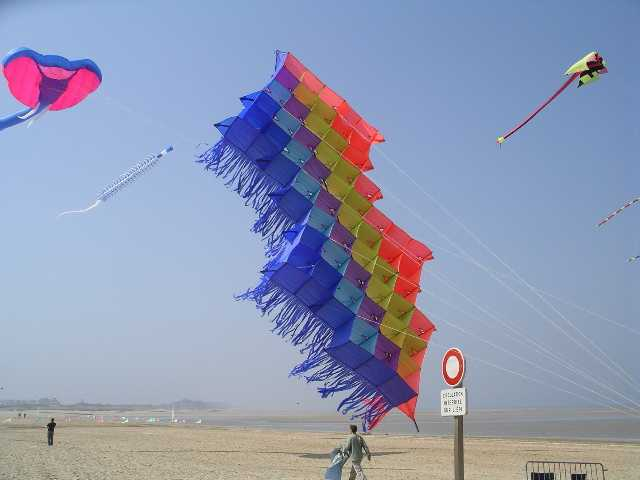
Les italiens ont créé ce très joli cerf-volant à étagères, très stable, mais nécessitant pas mal de vent...

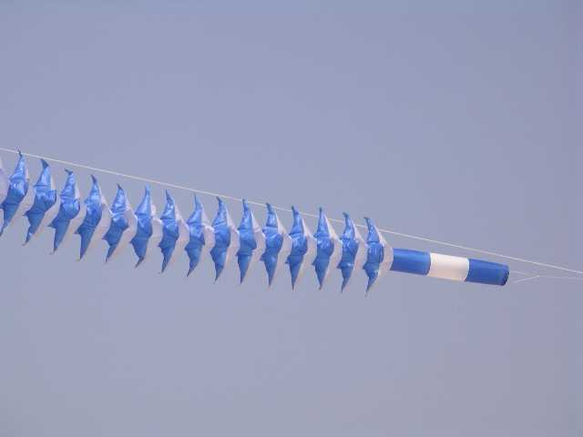
Il y a aussi une queue qui me plait bien, elle se contracte ou se dilate comme un accordéon en fonction des remous, et le résultat n'est pas vilain...

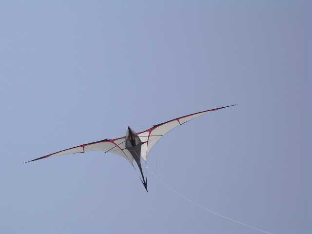
On peut voir aussi le grand oiseau-avion (?) de Ramlal, mais je n'ai pas vu Ramlal.

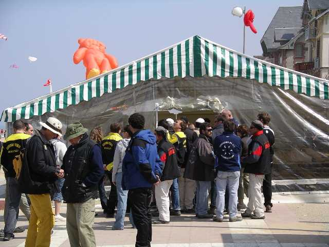
Au déjeuner, plateaux-repas froids sous la tente, à la bonne franquette, parfait, mais au top-départ il y a la queue !

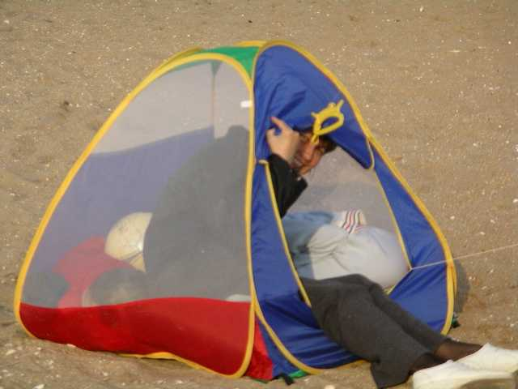
L'après-midi, faut s'abriter du soleil. Voilà une solution simple et peu encombrante, mais faut être souple...

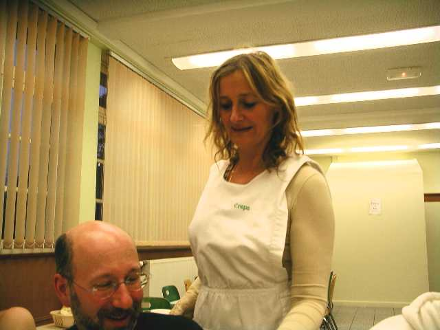
Le soir, repas au Creps de nouveau. La sirène du Creps nous accueille avec le sourire, surtout Yves qui lutine toutes les dames...

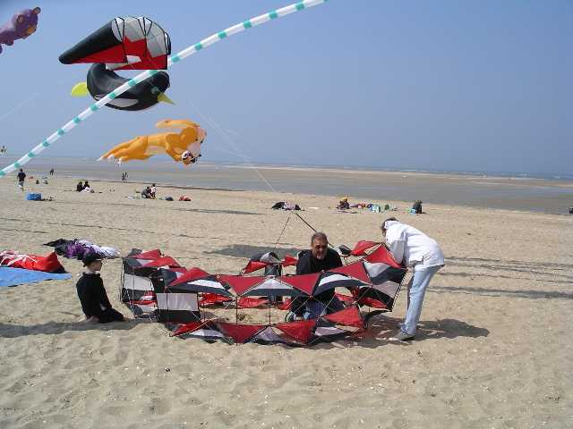
Au matin, Claude commence à monter sa roue, pour ces CVs, on trouve toujours un couillon pour aider (comme moi)...

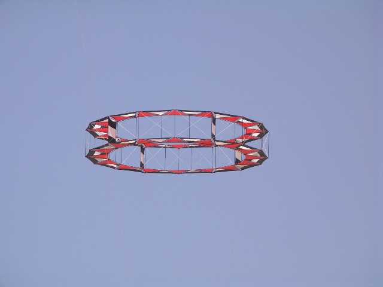
Ben ça y est, elle vole. Ca, c'est un bon cerf-volant, même par petit temps...

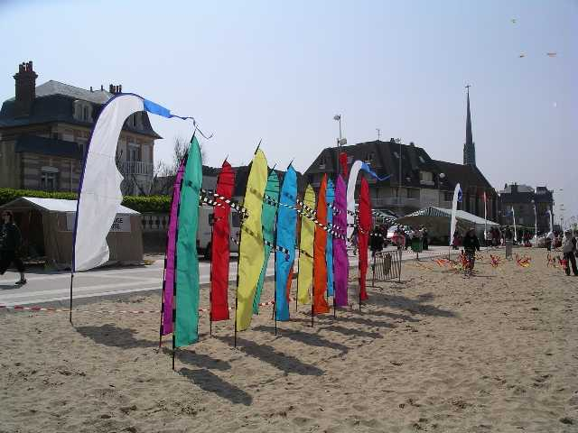
Michel a monté son champ de grandes bannières. Il en a aussi des plus petites, plus faciles à transporter, surtout que les grandes, il y en a la moitié dont on ne peut plus replier les cannes !

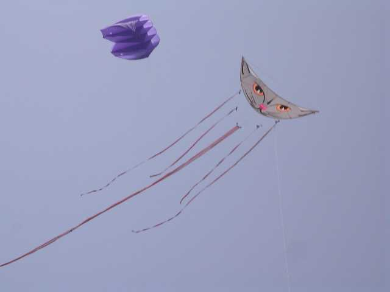
Emmanuel se déplace beaucoup, cette année, on voit (avec plaisir) ses chats partout...

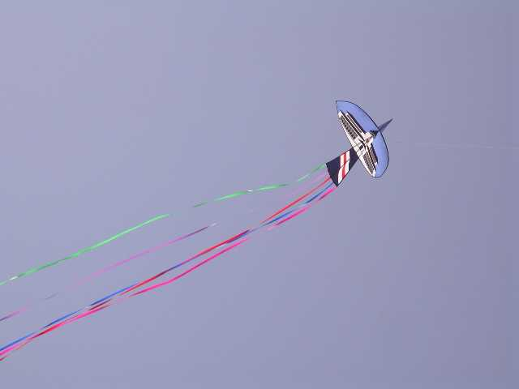
Un cerf-volant indonésien, tenu par une indonésienne, mais en bambou, spi et carbone, c'est quand même pratique le progrès...

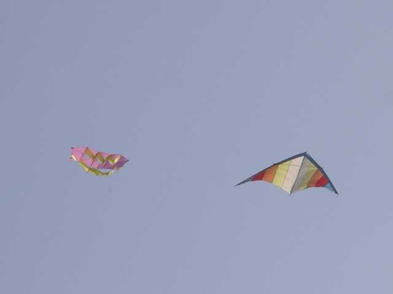
François est arrivé aussi, avec son "petit" delta de 6 m sans queue ni dérive, et qui vole très bien (tant qu'il y a du vent) !

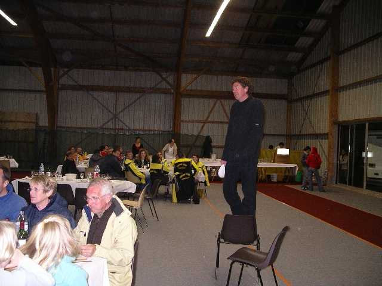
Le samedi soir, fête dans les tennis (couverts mais pas chauffés, faut manger en anorak) du Creps. Pouillaude essaie encore de faire un discours, mais il a plus de mal qu'à la mairie à se faire entendre...

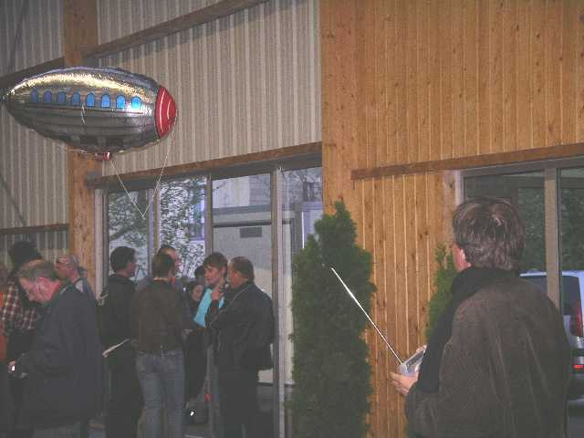
Maxime (Fellion, vous savez, qui a créé la revue Planète Cerf-volant) fait maintenant dans le dirigeable. Il en a amené un, jouet, mais il travaille dans plus sérieux comme ceux d'Ushuaïa...

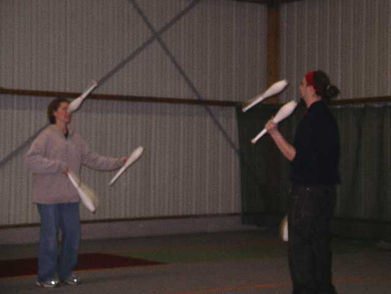
Un couple de jeunes jongleurs sympathiques anime la soirée en s'amusant aussi !

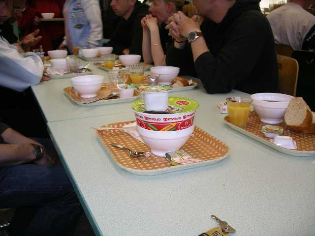
Le lendemain matin, petit-déj au Creps, tout ce qu'on veut, café, lait, céréales, jus de fruit, etc... Les chinoises préfèrent... des nouilles en conserve... beurk !

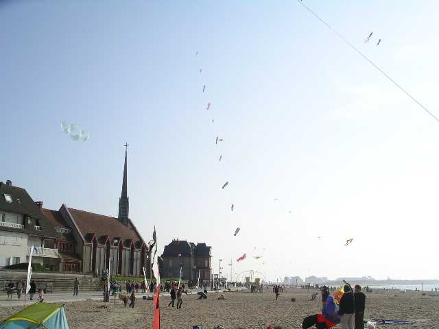
Christian a monté son ensemble de carpes. Il en avait plus mais on lui a coupé sa ligne pour lui en voler ! On aura tout vu ! Remarquez, à l'Antenne de Beauce, on nous a coupé une arche de 240 pour en voler 5... Deux heures pour démêler après !

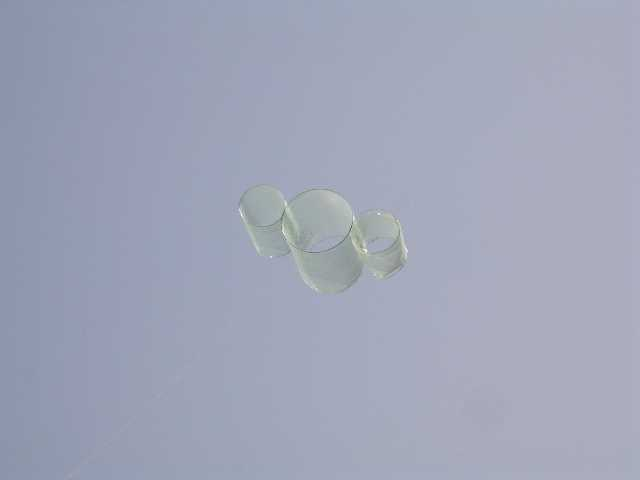
Le vent est moins fort, le tri-circoflex d'Emmanuel peut gonfler ses 3 tubes !

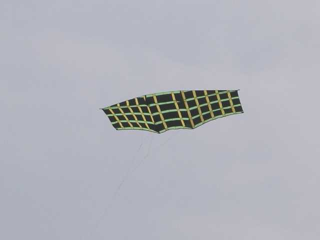
Vent ultra-léger, temps pour le Faga, celui-ci imite un lattis de bois (cloison chinoise ?), beau boulot de couture...

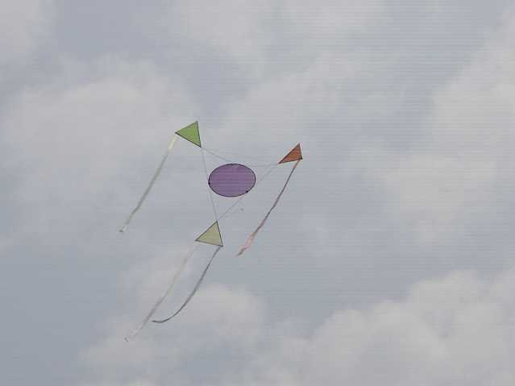
Emmanuel a sorti son léger aussi, pas beaucoup de surface, mais armature light...

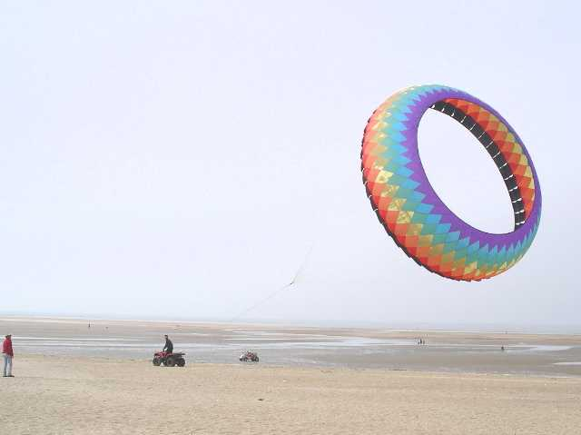
Pour les gros, il faut tricher, avec le Quad. Après un essai avec le bol, la grande pieuvre de Yves volera un peu, mais le 1/2 tour sera fatal au vol !

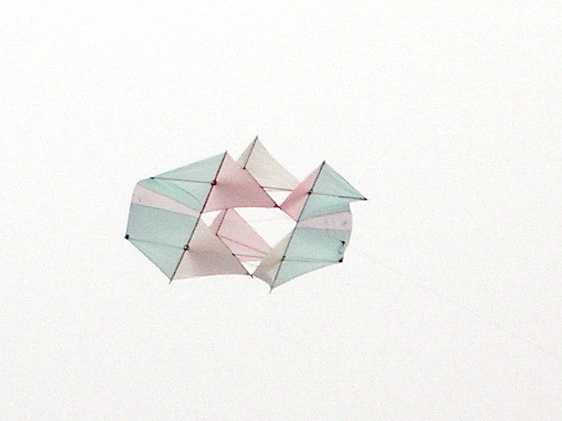
Christian a sorti son porteur le plus léger, un Pellibox avec des ailes supplémentaires...

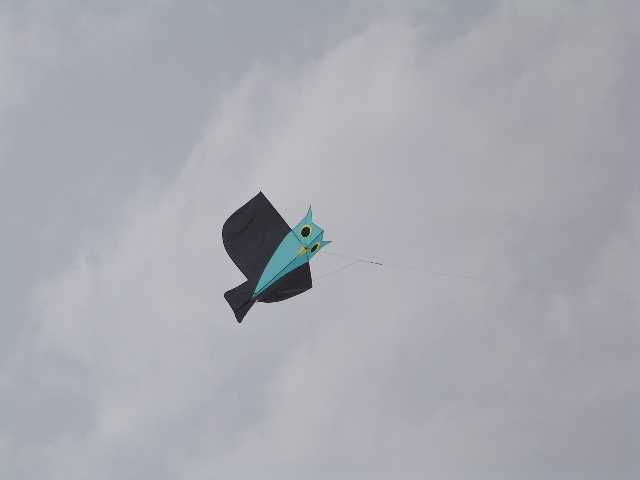
Déjà vu à Berck, ce gentil petit hibou, dans d'autres couleurs...

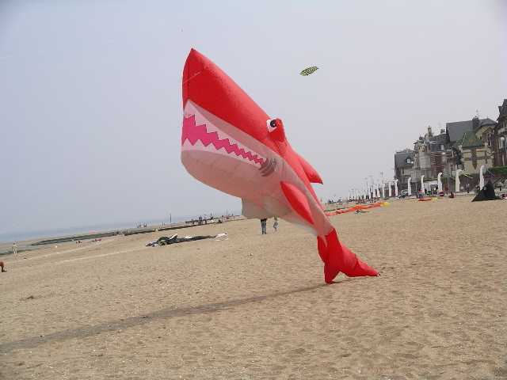
Ces requins-sacs ne décollent même pas, avec leur affreux bide ! Réflexion d'enfants entendue : il a dû manger au MacDo ! Les pubs contre l'obésité finissent par porter...

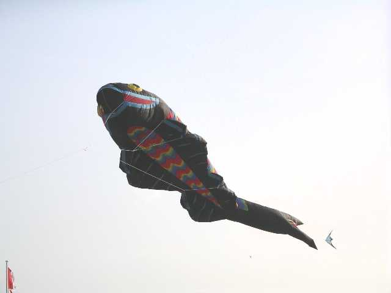
Encore les poissons volant tout seul, avec des nageoires, des écailles, etc. dans le vent qui monte un peu et devient parallèle à la plage, ce qui est meilleur...

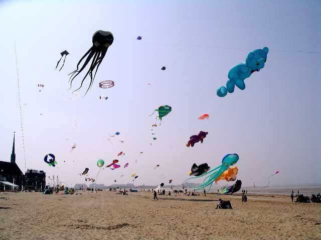
Finalement, le ciel se peuple bien devant l'église !

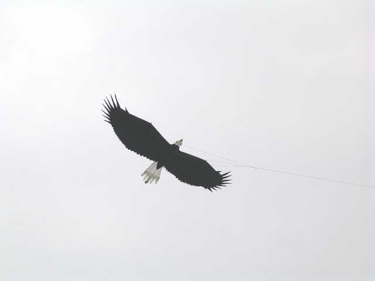
Les hollandais ont ramené l'oiseau aperçu de loin à Berck. Vu de face, il est impressionnant, en noir, avec toutes ces plumes...

Des deltas à queue, c'est classique, mais cet ensemble à queue en tapis n'est pas mal.

Ce cellulaire coloré est compliqué à comprendre, mais vole très bien.

Michel a amené sa guêpe qui plait bien aux enfants, même si elle a une surface d'aile invraisemblablement petite.

Un marchand vendait cet oiseau coloré et très réussi avec ses plumages dégradés !

Il existe aussi en version "Oiseau bleu" !

L'éléphant d'Afrique offre l'avantage d'avoir de grandes oreilles. On ne voit jamais voler d'éléphant d'Asie...

Une roue comme tant d'autres ? Hé ben non ! Celle-ci vole sur la tranche. Il est quand même difficile de la garder bien verticale, et puis les ailes avant masquent les ailes arrières qui flottent sans vraiment porter. Mais ça ne se voit pas trop...

Voilà une belle pieuvre qui m'emporterait bien, mais elle n'a pas assez de vent pour me décoller !

Un train-dragon hollandais et pas ordinaire avec cette tête de lion très réaliste, et une crinière en vrais poils !

Maxime (Fellion) fait du dirigeable, mais il crée encore et toujours de beaux cerfs-volants avec beaucoup d'éléments externes : barres qui dépassent, traînes en multi-ficelle, touffes, balles, etc. Mais toujours une architecture esthétique et équilibrée.

Cet attendrissant crocodile vole sans porteur, sinon je ne vous l'aurais pas montré, évidemment...

A droite de la plage, devant le Casino, parachute ascensionnel, en biplace évidemment pour l'initiation (plus de 70 kg, s'abstenir...). On boucle le harnais...

...le câble est bien tendu, attention pour le lancement...

Et c'est parti dans les azurs, toujours attaché au câble !

Comment ça marche ? Il y a un truc : à l'autre bout du câble, il y a un treuil avec un gros moteur qui enroule le câble à grande vitesse et permet de monter, même sans vent...

Quand l'angle est assez grand, on largue le câble, lequel retombe freiné par un petit parachute...

Les pilotes et les élèves s'amusent. Pendant ce temps, au sol, ça bosse pour récupérer le câble en Quad et le ramener au départ...

Le dimanche, on a mis les barrières. Le vent est faible une bonne partie de la journée, ça finit par se lever un peu et les cerfs-volants sortent des sacs, mais beaucoup moins que le samedi. Il est vrai qu'il y a aussi cerf-volant à Trouville, pas loin...

Les enfants des écoles ont reçu des cerfs-volants, ou plutôt des éléments d'arche à charge pour eux de les décorer et de les ramener pour les unir. Mais il en manque beaucoup !

L'arche n'est quand même pas négligeable, mais pas aussi grandiose que l'auraient souhaitée les organisateurs !

Cet octogone est spécial, avec des pointes décoratives. Et son créateur a réussi à écouler tout son fond de coupons dépareillés...

Celle-là, c'est celle de Christian, avec ses petites oreilles stabilisatrices.

Une queue, pour changer, en forme de dragon comme certaines gargouilles ou certaines trompettes anciennes d'apparat...

Et pour finir, la distribution de bonbons. Il a fallu une navette de grande surface, mais quand ça a été fini, personne ne savait à qui elle était !

Au lieu des bonbons, on a largué des espèces de beignets en sucre, mais rassurez-vous, dans des sacs étanches... Il ne fait pas bon être au milieu quand le mouvement est amorcé !
Voilà, la petite semaine de 5 jours est finie. On s'est bien amusé, au contact direct des plageurs (ben, baigneurs, c'est un peu tôt dans la saison, plagistes c'est des marchands de plage, et plagiaires c'est autre chose) et surtout des enfants, et on les a bien amusés. Quand le vent tournera, je repartira...